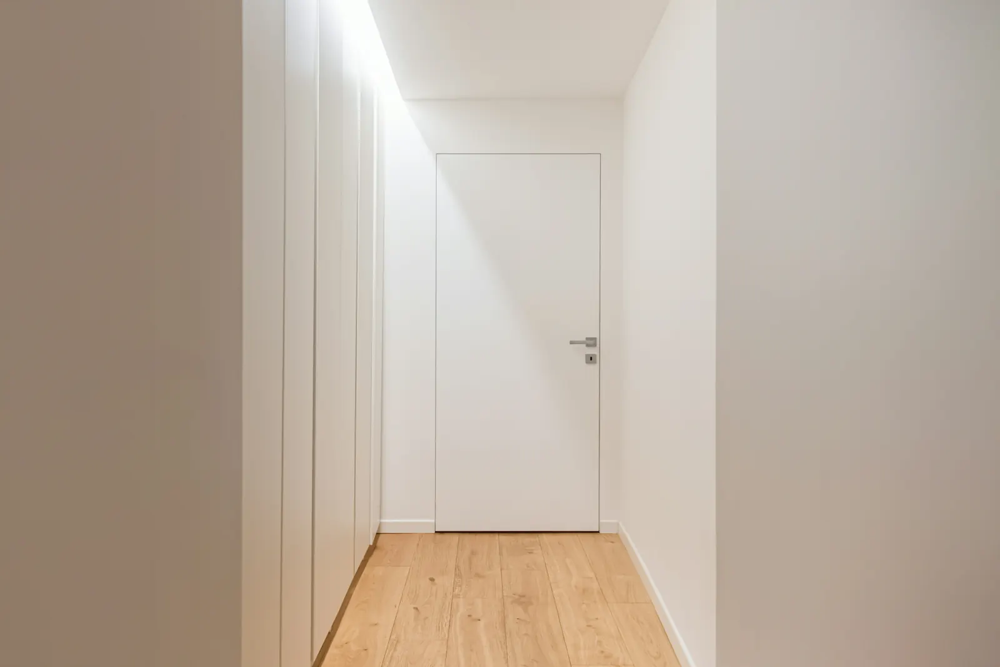
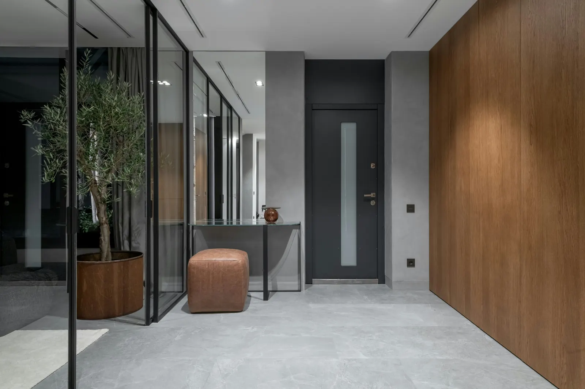

Prvi dojam vašeg doma zaslužuje promišljen prostor.
Izrađujemo rješenja za sve vrste predsoblja i ulaznih prostora, kao i prostorija u potkrovlju. Spretno organiziramo obuću, odjeću i sitnice, bez kompromisa u estetici, tako da ulaz u vaš dom bude uredan i ugodan.

Iskorištavamo svaki centimetar ulaznog prostora, i kod nepravilnih tlocrta.




Predsoblje je malo, a od njega se traži mnogo: mjesto za obuću, odjeću, torbe i sitnice, uz prvi dojam o cijelom domu. Svaki element zato izrađujemo po mjeri najmodernijom CNC hibridnom tehnologijom, što omogućuje precizno uklapanje i uz nepravilne zidove, niše i kose stropove.
Za fronte i radne površine biramo otporne Egger i Kaindl dekore i Fenix površine ugodne na dodir, koje dobro podnose svakodnevno habanje i lako se čiste. Vrata i ladice pokreću originalni Blum okovi s mekim zatvaranjem, a raspored unutrašnjosti slažemo prema tome što i koliko zaista trebate imati pri ruci.
Naš je cilj stvoriti predsoblje koje dom čini urednim već s prvim korakom – prostor u kojem sve ima svoje mjesto, a izlazak i povratak kući protječu bez žurbe.
Fronte do stropa stapaju se sa zidom i skrivaju sve što ne treba biti na pogledu, dok ogledalo i otvoreni dio s vješalicom ostaju pri ruci. Diskretna linijska rasvjeta u ormaru, ispod klupe ili uz ogledalo osvjetljava prostor bez bliještanja i ulaz u dom čini toplijim.